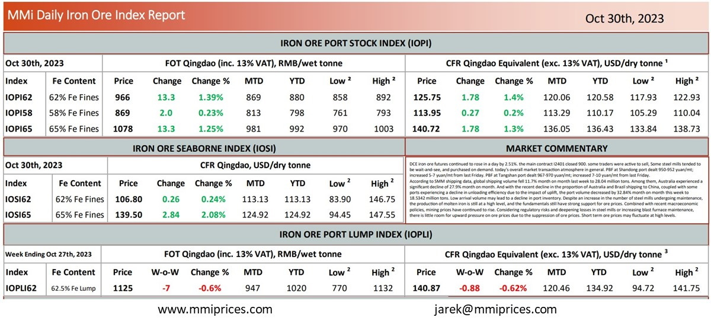

DCE iron ore futures continued to rose in a day by 2.51%. the main contract I2401 closed 900.some traders were active to sell, Some steel mills tended to be wait-and-see, and purchased on demand. today’s overall market transaction atmosphere in general. PBF at Shandong port dealt 950-952 yuan/mt; increased 5-7 yuan/mt from last Friday. PBF at Tangshan port dealt 967-970 yuan/mt; increased 7-10 yuan/mt from last Friday. According to SMM shipping data, global shipping volume fell 11.7% month on month last week to 28.04 million tons. Among them, Australia experienced a significant decline of 27.9% month on month. And with the recent decline in the proportion of Australia and Brazil shipping to China, coupled with some ports experiencing a decline in unloading efficiency due to the impact of uplion, the port volume decreased by 32.84% month on month this week to 18.5342 million tons. Low arrival volume may lead to a decline in port inventory. Despite an increase in the number of steel mills undergoing maintenance, the production of molten iron is still at a high level, and the fundamentals still have strong support for ore prices. Combined with recent macroeconomic policies, mining prices have continued to rise. Considering regulatory risks and deepening losses in steel mills or increasing blast furnace maintenance, there is little room for upward pressure on ore prices due to the suppression of ore prices. Short term ore prices may fluctuate at high levels.

Download PDFSource: Metals Market Index (MMi)